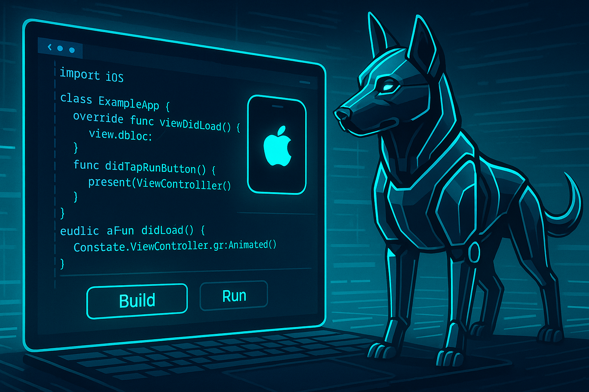
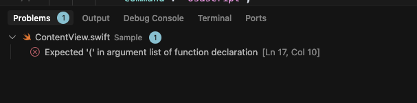

CursorでiOSアプリのBuild&Run

CursorでiOSアプリ開発を本格的に実施するようになり、1ヶ月弱が経過しました。 今のところ無事にVimからの移行に成功しています。
前回、Cursorでswift-formatする記事を書きましたが、今回はBuild&Runについて解説します。
Build&Runを実施する方法の候補
CursorでiOSアプリのBuildを行うには、以下の方法が考えられます。
- Taskで
xcodebuildを実行してproblemMatcherにかける - SweetPadなどのプラグインを使用する
- BuildはXcodeで行うと割り切る
わたしは最初にxcodebuildから試してみました。
結果として、Build自体は問題なく実行でき、BuildエラーをProblemsに取り込むことも問題ありませんでした。
しかし、xcodebuildとXcodeでのBuildは厳密には異なり、どうしてもXcodeのほうがBuildが速く終わるのです1。
SweetPadなどのプラグインも便利そうですが、そのBuildはxcodebuildを使用する実装になっているとのことでした。また、わたしは老害なので、まだ困っていない部分で大きなプラグインを導入することに抵抗があるため、今のところSweetPadの導入は見送っています。
Build&RunはXcodeに任せる
最終的に、わたしはBuild&RunはXcodeに任せることにしました。 それが最もBuildが速く、その後すぐにiPhone実機などでRunするのもスムーズだったためです。
Buildするタスク
CursorからXcodeにBuildを実行するのは、タスク経由でosascriptを実行するだけです：
{
"label": "Build Project",
"type": "shell",
"command": "osascript",
"args": [
"-e", "tell application \"Xcode\" to activate",
"-e", "tell application \"System Events\" to keystroke \"b\" using {command down}"
],
"problemMatcher": []
}
このタスクでは、
- Xcodeをアクティブにして
- Cmd + b キーを押す
という操作を行っています。
Runするタスク
Runを実行したい場合は、この設定を少し変更して Cmd + r キーを押すようにするだけです：
{
"label": "Run Project",
"type": "shell",
"command": "osascript",
"args": [
"-e", "tell application \"Xcode\" to activate",
"-e", "tell application \"System Events\" to keystroke \"r\" using {command down}"
],
"problemMatcher": []
}
現在のプロジェクトをXcodeで開くタスク
このBuild&Runのタスクは、あくまでも現在開いているXcodeプロジェクトでBuild&Runするだけですので、あらかじめ対象のプロジェクトをXcodeで開いておく必要があります。 そこもタスクで実行したい場合は、以下のような設定が使えます：
{
"label": "Open in Xcode",
"type": "shell",
"command": "zsh",
"args": [
"-c",
"open -a Xcode *.xcodeproj"
],
"problemMatcher": []
}
これでも概ね十分ですが、XXX.xcworkspaceを開くようにしたい場合や、プロジェクトごとに開くものを明示したい場合は、わたしは以下のように.vscode/.envに設定した環境変数を使用するようにしました。
{
"label": "Open in Xcode",
"type": "shell",
"command": "zsh",
"args": [
"-c",
"source ${workspaceFolder}/.vscode/.env; if [ -n \"$XCODE_TARGET\" ]; then open -a Xcode \"$XCODE_TARGET\"; else open -a Xcode *.xcodeproj; fi; echo \"Set XCODE_TARGET in .vscode.env if necessary.\""
],
"problemMatcher": []
}
具体的には、プロジェクトルートの.vscode/envに以下のように設定します：
XCODE_TARGET=Sample.xcworkspace
このXCODE_TARGET環境変数を設定することで、プロジェクトごとにXcodeで開く対象を明示できるようになりました。
なお、このXCODE_TARGET環境変数は、後述するXcodeのBuildエラーをCursorに取り込む際にも使用します。
ここまででも十分？
これまでの設定で、
- Cursorから指示を出してXcodeでBuild
- Buildに成功してRunしたければそのままXcodeでRun
- Buildエラーが出たらXcodeで確認してCursorに戻って修正
- 必要ならCursorから直接Runも可能
という状態になりましたので、ここまででも十分に使用できると考えています。
XcodeでのBuildエラーをCursorに取り込む
できれば、Cursorで直接xcodebuildを実行するときのように、Xcodeで発生したBuildエラーをCursorに取り込めれば最高です。
Build結果のログからエラーを抽出できれば実現できそうです。
しかし、Xcodeのビルド結果は*.xcactivitylogという特殊な形式のログになっており、テキスト情報をそのまま取得することができません。
また、プロジェクトごとにこの*.xcactivitylogの場所を探すのも大変です。
この問題を解決するために、XCLogParserというコマンドラインツールがあります。もともとSpotify製だったようです。 これを使用すると：
xclogparser parse --xcodeproj Sample.xcodeproj --reporter flatJson
とxcodeprojもしくはxcworkspaceを指定するだけで、簡単に*.xcactivitylogの中身を収集できます。
このParse結果にもいくつかの癖があるため、わたしはxclogparserを実行してproblemMatcherにかけるために以下のスクリプトを使用しています：
#!/bin/zsh
# エラーが発生したら即座に終了
set -e
WORKSPACE_FOLDER="$1"
cd "$WORKSPACE_FOLDER"
echo "WORKSPACE_FOLDER: $WORKSPACE_FOLDER"
# 環境変数の読み込み
if [ -f ".vscode/.env" ]; then
source ".vscode/.env"
else
echo "Warning: .vscode/.env file not found"
fi
# XCODE_TARGET未指定なら*.xcodeprojを探す
if [ -z "$XCODE_TARGET" ]; then
echo "Warning: XCODE_TARGET is not defined in .vscode/.env"
XCODE_TARGET=$(find . -maxdepth 1 -type d -name "*.xcodeproj" | head -n 1)
fi
echo "XCODE_TARGET: $XCODE_TARGET"
# 引数の決定
if [[ "$XCODE_TARGET" == *.xcodeproj ]]; then
TARGET_FLAG="--xcodeproj"
TARGET="$WORKSPACE_FOLDER/$XCODE_TARGET"
elif [[ "$XCODE_TARGET" == *.xcworkspace ]]; then
TARGET_FLAG="--workspace"
TARGET="$WORKSPACE_FOLDER/$XCODE_TARGET"
else
TARGET_FLAG="--project"
TARGET="$XCODE_TARGET"
fi
echo "TARGET: $TARGET_FLAG $TARGET"
# xclogparserを使用してビルドの問題を収集
xclogparser parse \
$TARGET_FLAG $TARGET \
--reporter flatJson | \
jq '[.[].errors[], .[].warnings[]] | flatten | .[]' | \
jq -r '(if .documentURL == "" then .detail else (.documentURL | gsub("^file://"; "")) + ":" + (.startingLineNumber | tostring) + ":" + (.startingColumnNumber | tostring) + ":" + (if .severity == 2 then " error: " else " warning: " end) + .title end)'
このスクリプトを以下のタスクから呼び出しています：
{
"label": "Collect Build Problems",
"type": "shell",
"command": "$HOME/.cursor/scripts/collect-build-problems-default.sh ${workspaceFolder}",
"problemMatcher": [
{
"owner": "xcode",
"fileLocation": ["absolute"],
"pattern": {
"regexp": "^(.*):(\\d+):(\\d+):\\s+(error|warning):\\s+(.*)$",
"file": 1,
"line": 2,
"column": 3,
"severity": 4,
"message": 5
}
}
],
"presentation": {
"reveal": "always",
"revealProblems": "onProblem"
}
}
XcodeでのBuild後にCursorでこのタスクを実行すれば、CursorのProblemsパネルにXcodeでのBuildエラーがそのまま取り込まれます。

わたしはこのタスクをファイルの保存時にも呼び出すようにしていてそれで必要十分と感じていますが、必要なら定期的に叩くようにして自動でBuildエラーの解消を反映してもらうのも良いかもしれません。
まとめ
- わたしはコードを書くのはCursorで、Build&RunはXcodeでと役割を分けていて、今のところ快適です
- 必要ならXcodeでのBuildエラーをCursorのProblemsとして取り込むこともできます
おまけ: Cursorでxcodebuildコマンドを叩きたいなら
この運用にする前に使っていたxcodebuildを叩くタスクはこちら:
{
"label": "xcodebuild",
"type": "shell",
"command": "xcodebuild",
"args": [
"-project", "Sample.xcodeproj",
"-scheme", "sample",
"build",
],
"group": {
"kind": "build",
"isDefault": true
},
"problemMatcher": [
{
"owner": "xcode",
"fileLocation": ["absolute"],
"pattern": {
"regexp": "^(.*):(\\d+):(\\d+):\\s+(error|warning):\\s+(.*)$",
"file": 1,
"line": 2,
"column": 3,
"severity": 4,
"message": 5,
},
}
]
}
-
xcodebuildとXcodeのGUIでのビルドはそもそも役割が違い、主にはxcodebuildは毎回プロビジョニング関連の通信が走るなどの違いがあるようです ↩︎